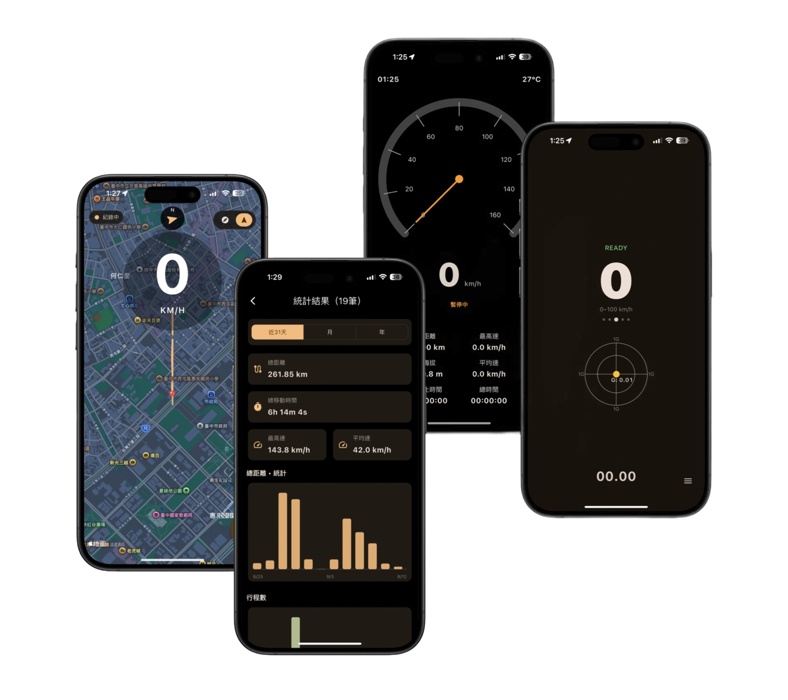
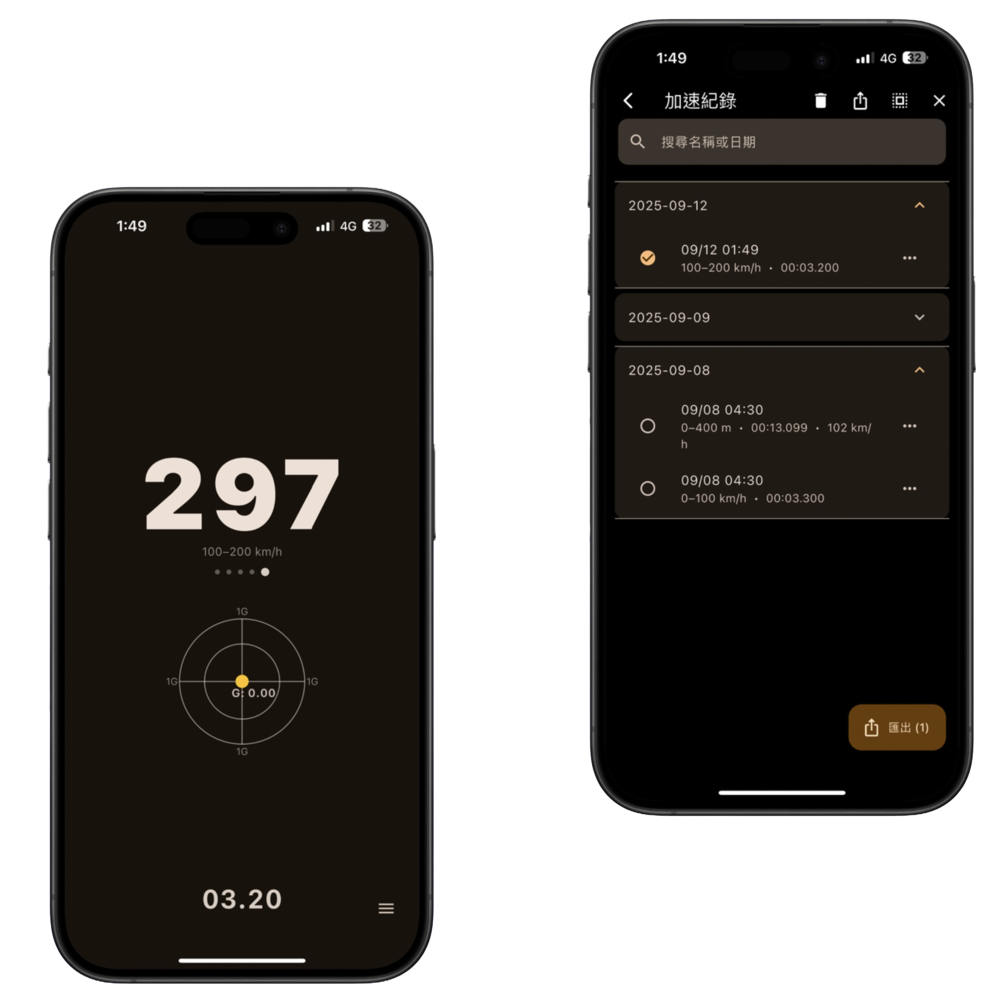
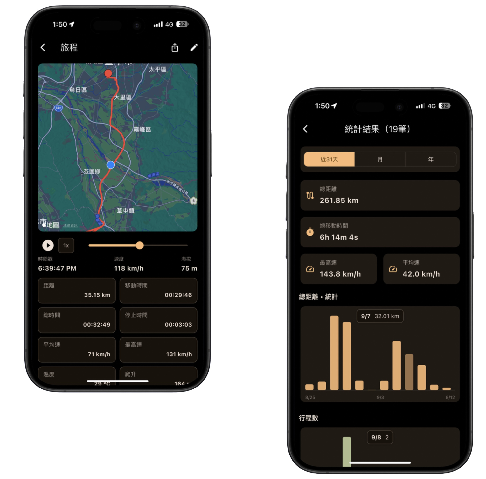

讓每段旅程更專業！精準測速、地圖模式、加速測試、相機 HUD、旅程紀錄與依使用者自由可計算的油耗/電耗統計。

高速更新率、km/h 與 mph 切換，市區或高速都穩定可靠。
北向/航向模式、動態路徑、起訖自動縮放，旅程資訊一目了然。
0–50、0–60、0–100、100–200 km/h 與 0–400m，一鍵記錄最佳成績與最高速。
錄影同時顯示速度錶，日夜清晰，打造酷炫行車記錄。
單筆/全選管理；匯出/匯入；支援依使用者自由可計算的油耗/電耗等多元統計。
去廣告、完整紀錄、更多自訂；支援快捷選單/嘿 Siri/捷徑/自動化/動作按鈕。

